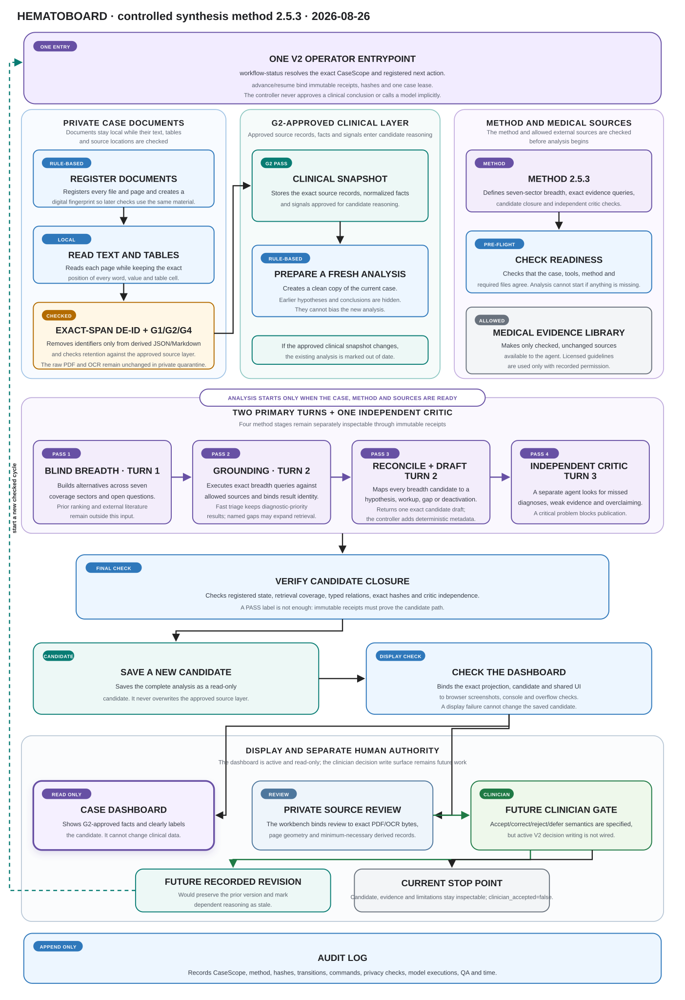
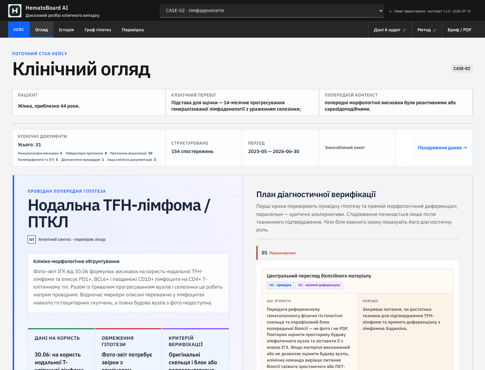
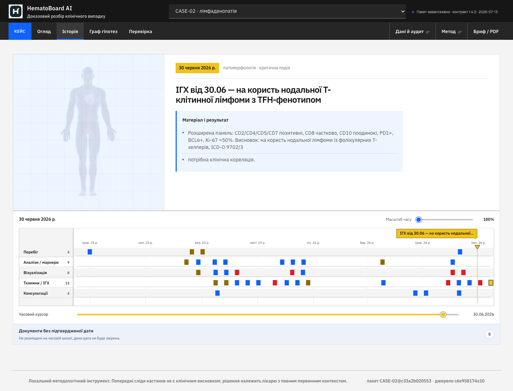
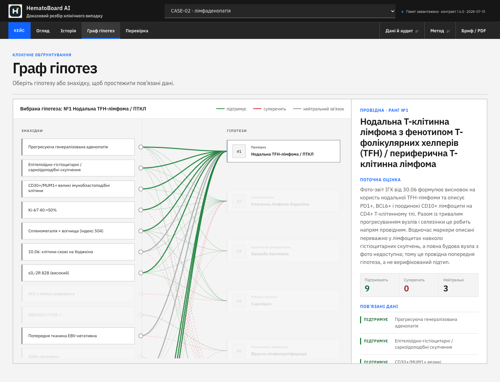

Research preview · clinician-in-the-loop testing
A clinician-controlled evidence and gap workbench for complex hematology cases
HematoBoard turns heterogeneous clinical records into a traceable case state, places candidate hypotheses beside the evidence that supports or challenges them, and makes missing verification visible before a clinician decides what to accept.
Inspectability before automation
Long hematology records are not merely large. They combine scanned tables, narrative findings, pathology, imaging, changing terminology, partial work-up, and conclusions made at different moments. A useful system must preserve which statement came from which source, which interpretation remains provisional, and what information could still change the case.
HematoBoard is not an autonomous diagnostician. Its research question is more practical: can an AI-assisted workbench make every important statement about a difficult case inspectable, source-bound, and reversible? The public site is a static, de-identified projection of prepared case packages. Raw clinical documents, re-identification keys, licensed guideline corpora, private audit logs, and the clinician acceptance service remain outside it.
A controlled graph, not a single linear pipeline
The figure describes trust dependencies. Recognition can reopen a targeted crop; a reasoning candidate can generate a new evidence question; and an accepted revision begins a new hash-pinned cycle. Colour identifies the authority of each block, not its position in a simple job queue.
{kind=link}

- Private intakeCreates an isolated case workspace, inventories pages, preserves the original file, and records hashes and phase time.
- Apple Vision OCRRuns locally and returns recognized text, confidence, and word positions while the PDF remains the pixel source of truth.
- Structure and de-identificationReconstructs test, result, unit, comparator, and reference as strict JSON, then removes identifiers without losing row geometry.
- Source reviewUses privacy-screened crops and bounded multimodal readers; consensus closes a field, disagreement reopens only that field.
- Accepted evidence ledgerStores canonical measurements, dates, findings, provenance, and immutable revisions. AI Agents may read it but cannot revise it.
- External evidence and synthesisFinds and verifies narrow propositions, then builds a separate candidate argument with explicit gaps and limitations.
- Projection closureBuilds each page from ledger and candidate files and blocks review when the rendered document differs from those sources.
- Dashboard and clinician reviewThe dashboard is the primary public output and remains read-only. A separate review surface records the responsible clinician’s decision.
One case, three complementary readings
{kind=link}

{kind=link}

{kind=link}

Screenshots use the de-identified public CASE-02 demonstrator and show the Ukrainian interface. They belong to the public presentation layer; CASE006 and its private source-review workspace are not published.
The dashboard is a projection, not a second record
Canonical case state lives in a versioned evidence bundle. The public interface is rebuilt from that bundle and one hash-pinned reasoning revision.
Accepted observations use stable identifiers and may carry document, page and crop identity; source text; normalized result, unit, comparator, and reference interval; date provenance; verification and privacy status; and links to interpretations, hypotheses, and work-up questions.
Reading difficult documents as measurement transfer
Local recognition
Apple Vision runs on-device and returns strings, confidence, and bounding regions. Coordinates allow every field to reopen at its exact source location.
Structure before de-identification
Strict JSON binds a test name, result, unit, comparator, and reference interval to one row identity before unnecessary identifiers are removed.
No silent correction
Raw OCR stays immutable. A correction such as ч instead of 4 becomes a separate receipt linked to crop, page hash, reader, and time.
Selective agent adjudication
Bounded multimodal readers receive de-identified crops. Exact independent consensus may close a field; low confidence or disagreement creates a targeted exception.
Machine consensus is an auditable source-reading result. It is not a clinician’s acceptance of a diagnosis, stage, or treatment indication.
Search ranking is not evidence
AI Agent discovery, deterministic source lookup, proposition verification, and case applicability are distinct operations.
A proposition-level receipt records one exact clinical statement together with source identity and version, page or section, evidence type, licence and model-use status, case applicability, and reviewer. A PMID or guideline title alone cannot establish concordance, diagnosis, stage, or treatment indication.
Prepared guideline corpora may use a case-local SQLite full-text index as a locator. FTS does not judge whether a recommendation applies. Licensed text remains local when its terms do not permit external model processing.
A candidate argument with bounded authority
The AI Agent receives a minimum-necessary clinical projection. Raw PDFs, direct identifiers, UI state, prior ranking, and clinician decisions are excluded from the initial breadth pass.
- Breadth
Generate plausible hypotheses and dangerous alternatives without inheriting the previous ranking.
- Grounding
Connect every material claim to accepted observation identifiers and allowed external evidence.
- Reconciliation
Expose contradictions, missing tissue or staging data, and evidence capable of changing the order.
- Safety critic
Reject unsupported certainty, directive treatment language, stale inputs, broken provenance, and mixed accepted/candidate state.
The result is an immutable revision with its own input snapshot, method, comparison to the previous revision, gaps, limitations, and audit chain. It cannot promote itself.
Formal invariants used by the system
These expressions describe implemented verification boundaries. They are not decorative clinical scores.
Field-level projection closure
Technical projection passes only when Cproj = 1, identifier sets are identical, and static analysis finds no case-specific clinical values embedded in page code.
Reasoning freshness
A candidate is fresh only while its recorded input hash matches the current canonical clinical projection. A relevant bundle change makes it stale.
Typed argument graph
The graph preserves an inspectable argument structure. It does not estimate a diagnostic probability.
Promotion boundary
Source closure, privacy, technical verification, unchanged input, clinician decision, and a valid atomic transaction are all required.
Minimum-necessary data across a local-first boundary
- Raw PDFs, page renders, direct identifiers, and re-identification mappings stay in private case quarantine.
- Apple Vision OCR runs locally; de-identification follows structured reconstruction.
- A cloud AI Agent receives only an approved, de-identified projection or a tightly scoped cleared crop.
- Licensed guidance remains local when external model processing is not permitted.
- Adapters fail closed until isolation and data-boundary checks pass.
- AI Agent outputs are candidates and cannot publish a case or impersonate a clinician decision.
- Material transformations retain version, hash, operation, and responsible human or agent identity.
- Local multimodal and language models are planned for evaluation under the same receipt contracts.
De-identification reduces disclosure risk; it is not proof of irreversible anonymity. Institutional, legal, security, and ethics governance remain necessary.
What enters the evidence environment
| Layer | Source families | Recorded control |
|---|---|---|
| Patient record | Laboratory, pathology, imaging, procedures, clinical narrative | Document, page or crop, field structure, date, verification, privacy |
| Literature | PubMed, DOI records, peer-reviewed articles | Citation, evidence type, exact proposition, applicability, retrieval receipt |
| Guidelines | Official societies, classifications, institutional or licensed local PDFs | Edition, date, page or node, licence, model-use permission, review status |
| Provenance | Versioned JSON, SHA-256, immutable revisions, typed relations | Input/output identity, lineage, responsible agent, projection closure |
| Human authority | Source review and final clinician decision | Append-only acceptance, correction, rejection, or deferral |
Controlled testing; clinical benefit not yet established
Current work evaluates source reconstruction, measurement transfer, evidence traceability, reasoning freshness, projection closure, and clinician-facing review ergonomics using prepared, de-identified case packages.
Formal external clinical validation, prospective effectiveness evaluation, regulatory qualification, and deployment performance are not yet established. Planned evaluation separates exact field transfer, provenance failures, appropriate abstention, correction recovery, clinician review time, disagreement, and usability. No single aggregate score will be treated as proof of clinical benefit.
The repository currently publishes the read-only demonstrator, de-identified example packages, diagrams, and release receipts. Reusable schemas, validators, and a sanitized reference pipeline are being prepared for a later release.
Selected standards, methods, and clinical sources
- Apple. (n.d.). Recognizing text in images. Apple Developer Documentation. developer.apple.com
- Brouwers, M. C., et al. (2010). AGREE II: Advancing guideline development, reporting and evaluation in health care. Journal of Clinical Epidemiology, 63(12), 1308–1311. https://doi.org/10.1016/j.jclinepi.2010.07.001
- Campo, E., et al. (2022). The International Consensus Classification of Mature Lymphoid Neoplasms. Blood, 140(11), 1229–1253. https://doi.org/10.1182/blood.2022015851
- d'Amore, F., et al. (2025). Peripheral T- and natural killer-cell lymphomas: ESMO–EHA Clinical Practice Guideline. Annals of Oncology, 36(6), 626–644. https://doi.org/10.1016/j.annonc.2025.01.023
- European Parliament & Council of the European Union. (2016). Regulation (EU) 2016/679, Article 5. EUR-Lex
- Gaube, S., et al. (2021). Do as AI say: Susceptibility in deployment of clinical decision-aids. npj Digital Medicine, 4, 31. https://doi.org/10.1038/s41746-021-00385-9
- National Institute of Standards and Technology. (2015). Secure Hash Standard (FIPS PUB 180-4). https://doi.org/10.6028/NIST.FIPS.180-4
- Vasey, B., et al. (2022). Reporting guideline for early-stage clinical evaluation of AI decision support: DECIDE-AI. Nature Medicine, 28, 924–933. https://doi.org/10.1038/s41591-022-01772-9
- World Health Organization. (2021). Ethics and governance of artificial intelligence for health. who.int
- World Wide Web Consortium. (2013). PROV-O: The PROV Ontology. w3.org/TR/prov-o